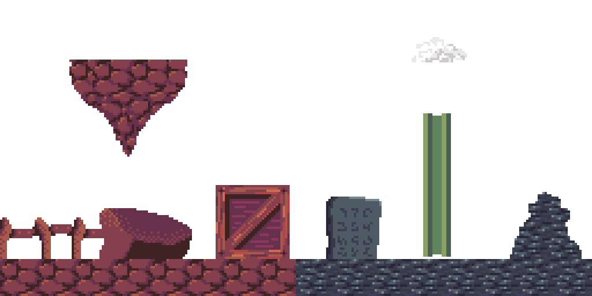
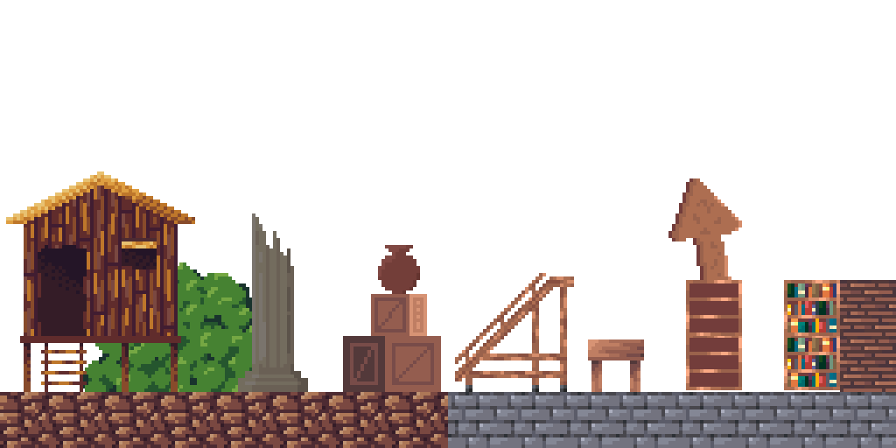
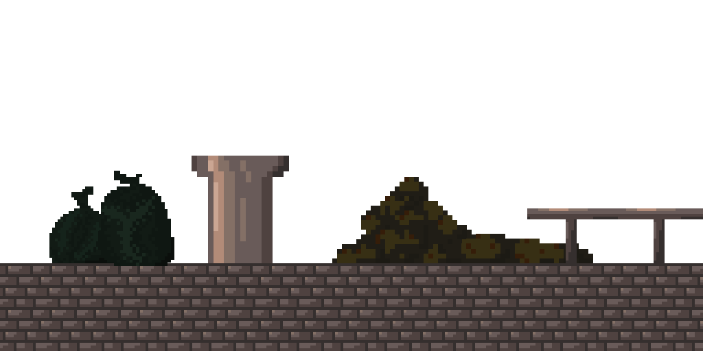
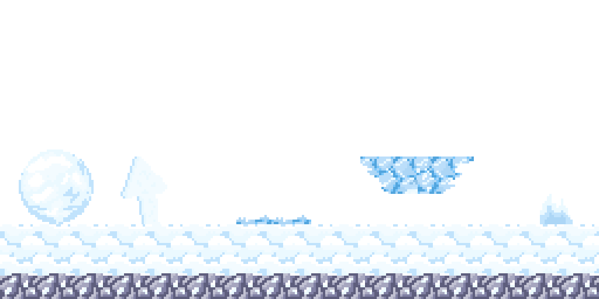
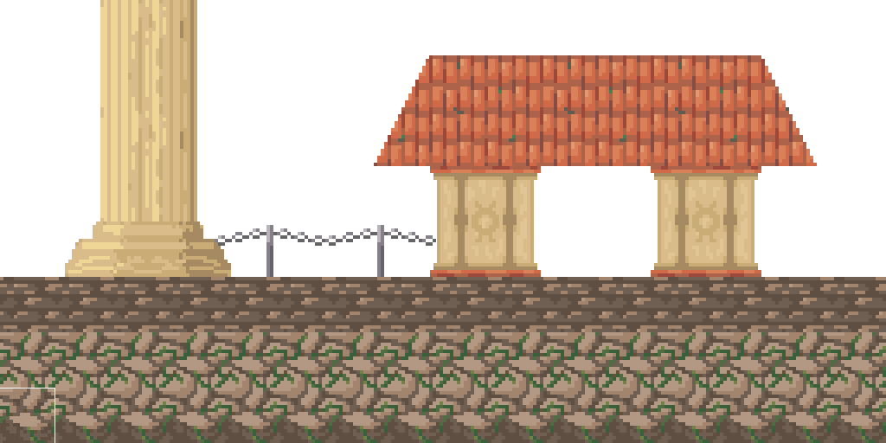
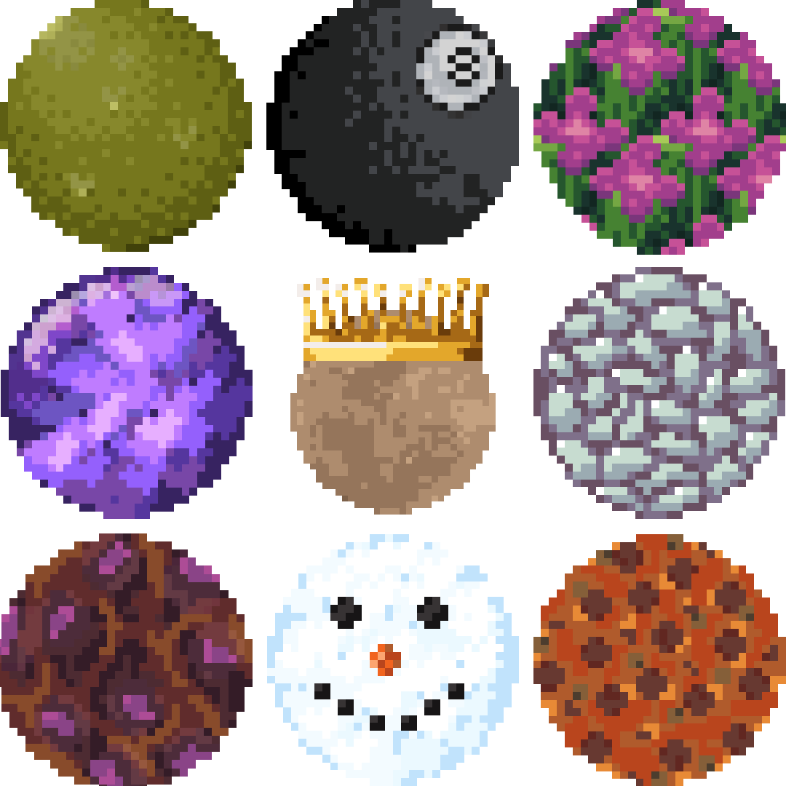

Debut Indie Game
Stoic is a physics-based platformer that I independently designed, developed, and published over the course of nearly three years. Beginning in 2023 with little programming experience and no prior game development background, the project served as both a learning opportunity and a practical application of the skills I was developing through my Game Programming and Development degree.
Inspired by titles such as Jump King and Getting Over It with Bennett Foddy, I built Stoic around a physics-driven launching mechanic that emphasizes precision, momentum, and persistence. Throughout development, I iterated on gameplay systems, visual direction, and level design before settling on a minimalist 2D art style and a narrative loosely inspired by the life of Zeno of Citium, founder of Stoic philosophy.
The project provided hands-on experience across the full development pipeline, including gameplay programming, physics systems, level design, playtesting, and publishing. Stoic was released on Steam for Windows on March 16, 2026, marking my first commercial game release.
Screenshots
A selection of Stoic's Artwork





